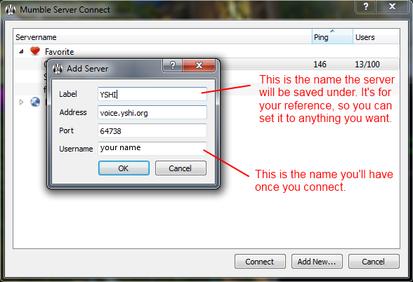
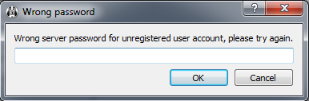
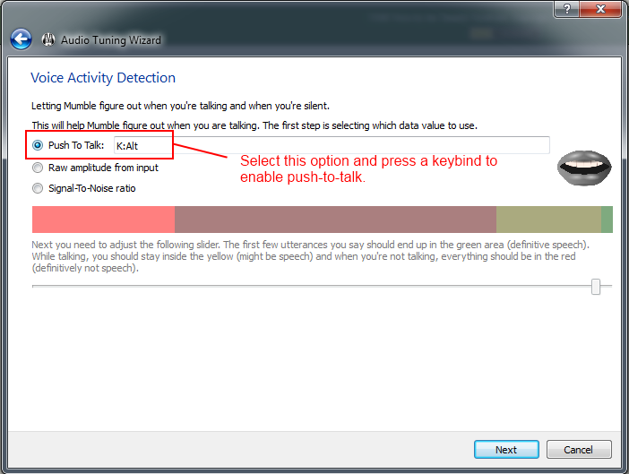

Yasashii Voice Communications Help Manual: Mumble Setup
TIME REQUIRED: FIVE MINUTES
To join us, you will need to download, install, and configure Mumble. Mumble is a free, open-source VoIP program, similar to Ventrilo and Teamspeak. It is available for Windows, Mac OS X, Linux, Android, and iOS devices. This page will provide you with instructions on getting set up.
- Download the Mumble software at mumble.info.
- Run the installer and launch Mumble.
-
Server → Connect → Add New… and fill out the server information.
Address: voice.yshi.org
Port: 64738
 -
Save the settings and connect. You will be prompted for the password. The group leader will provide it.
 - Join the appropriate channel for your raid group.
-
If you want to speak, please run the audio setup wizard under the Configuration menu. It will let you set up a push-to-talk key during the process.

YSHI Voice by the Yasashii Syndicate. Copyright 2011 - 2017, all rights reserved.